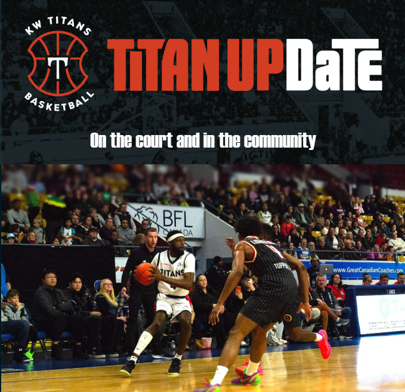
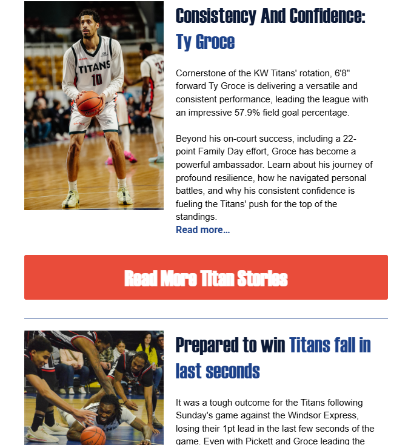
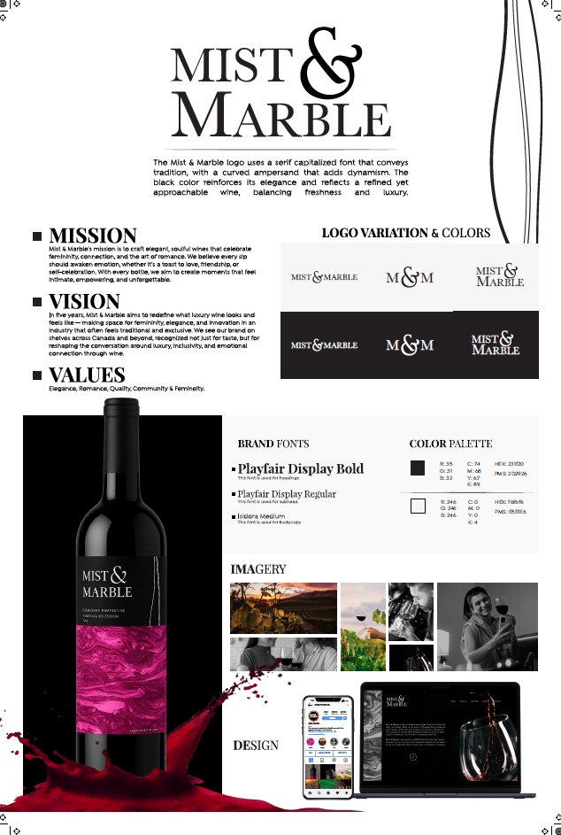
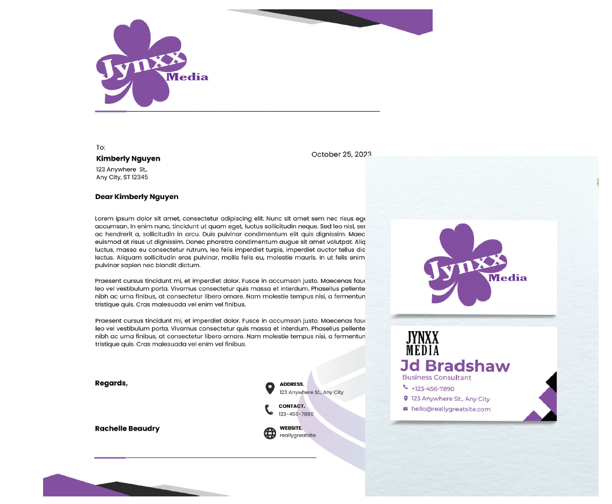
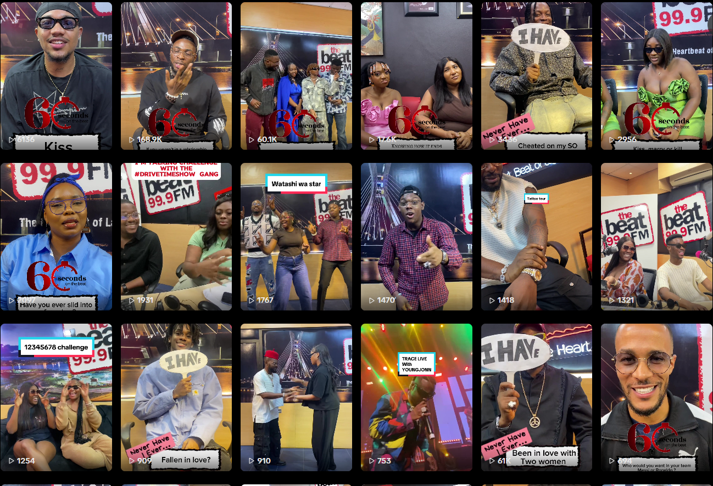

Hello! My name is Oyin Joda.
I blend strategic storytelling with hands-on content creation to build real connections between brands and audiences. From producing multi-platform broadcast assets to generating 450,000+ organic views across my own digital media channels, I know how to turn creative ideas into engaging, high-performing visual content.
Welcome to my portfolio! Here, you’ll find a curated collection of my work across media operations, strategic communications, and content creation. Every project tells a story: identifying a challenge, digging into audience insights, and creating clear, creative solutions that deliver real results.
This collection highlights my full workflow, from early-stage marketing briefs and event roadmaps to live video and design assets. It proves that great results don't just happen by accident; they come from combining solid strategy with agile, on-the-ground execution.
What I bring
I bring a versatile blend of strategic and creative capabilities, combining clear audience communication with powerful multimedia content creation:
What people say
Oyin brings a level of professional maturity, empathy, and leadership that is beyond the regular scope of a student. Her ability to execute professional press releases and newsletters for a professional sports organization serves as a testament to the high-calibre talent she brings.
Oyinkansola demonstrated a high level of professionalism, creativity, and initiative. Her ability to translate ideas into compelling messaging, manage tasks independently, and collaborate effectively made her a valuable part of our team.


Capstone Project
— Instrumental Integrated Marketing & Communications Plan
The Objective: Build a structured community event and marketing roadmap for a youth non-profit client, balancing creative outreach with real resource constraints.
Core Deliverables: Served as Lead Consultant to design master timelines, map project milestones, and coordinate volunteer workflows.
Impact: Maintained direct communication with executive board members to keep campaign strategy, brand messaging, and project execution aligned from start to finish.
View MoreAgency Co-Op
— KW Titans Live Campaign & Asset Operations
The Objective: Coordinate real-time marketing asset deployment, live social coverage, and PR workflows in a fast-paced sports entertainment environment.
Core Deliverables: Managed live media operations, game-day content delivery, and fan engagement activations during high-attendance basketball games.
Impact: Distributed press releases, managed email newsletter content, and tracked audience response metrics across digital channels.
View More





Print Design
— Promotional Marketing Material
Objective: Design clean, high-impact print collateral that communicates key brand messages and captures audience attention offline.
Core Deliverables: Formatted posters, promotional flyers, and event signage aligned with core brand guidelines and print production standards.
Impact:Delivered ready-to-print visual assets that enhanced event visibility and maintained consistent branding across physical and digital touchpoints.
View MoreMedia Project
— Multi Channel Content Production
The Objective: Manage fast-paced content calendars that grow organic reach and keep brand voice consistent across channels.
Core Deliverables: Produced, edited, and published 3–5 high-impact media assets weekly across major broadcast radio networks and independent digital channels.
Impact: Optimized content for platform algorithms and audience engagement, scaling total impressions past 400,000+ views.
View More

The Objective: Build a cohesive visual identity system to keep brand messaging consistent, recognizable, and sharp across all digital platforms.
Core Deliverables: A comprehensive brand style guide defining typography, color palettes, logo usage, and visual standards for multi-channel distribution.

The Objective: Turn complex brand messaging into clean, eye-catching digital graphics designed to boost engagement and drive clicks.
Core Deliverables: Custom visual assets and high-converting thumbnails built on audience research, trend insights, and strong visual storytelling formats.